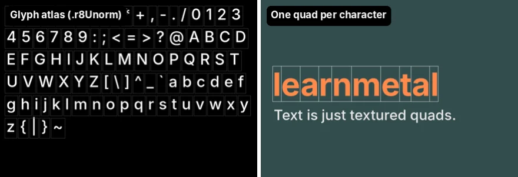

In Practice
Text Rendering#
Sooner or later you want to draw text: a frame counter, a score, a label above an object. Metal has no text support. It draws triangles. Text is therefore rendered as textured quads, one per character, with a texture that contains the shapes of the characters.
Options#
- Let the system do it. For UI that sits on top of your view, put a SwiftUI or UIKit label over the
MTKView. It is free, sharp, localized and accessible. For debug overlays and menus this is usually the right answer. - Render strings to textures. Draw a whole string with Core Text into a bitmap and show it on a quad. Good for text that rarely changes.
- A glyph atlas. Draw every character once into one texture, then compose any string from quads. This is the classic approach for text inside the 3D scene or text that changes every frame, and it is what this chapter builds.
Glyphs and metrics#
A font is a collection of glyphs, the shapes of characters. To place them correctly, we need a few measurements for each glyph, all relative to the baseline on which the text sits:
- the bounding box: the rectangle the shape occupies, which can extend below the baseline for letters like g and p,
- the advance: how far to move the pen to the right before drawing the next glyph.
Core Text provides both, and can draw glyphs into a Core Graphics bitmap.
Building the atlas#
We draw the printable ASCII characters into a single-channel bitmap, packing them in rows, and record where each one ended up.
import CoreText
import Metal
struct Glyph {
var uvMin: SIMD2<Float> // top-left corner in the atlas
var uvMax: SIMD2<Float> // bottom-right corner
var size: SIMD2<Float> // quad size in pixels
var bearing: SIMD2<Float> // offset from the pen position to the quad's bottom-left
var advance: Float
}
final class FontAtlas {
let texture: MTLTexture
private(set) var glyphs: [Character: Glyph] = [:]
init(device: MTLDevice, fontName: String, fontSize: CGFloat, atlasSize: Int = 1024) {
let font = CTFontCreateWithName(fontName as CFString, fontSize, nil)
let padding: CGFloat = 2
let context = CGContext(data: nil, width: atlasSize, height: atlasSize,
bitsPerComponent: 8, bytesPerRow: atlasSize,
space: CGColorSpaceCreateDeviceGray(),
bitmapInfo: CGImageAlphaInfo.none.rawValue)!
context.setFillColor(gray: 1, alpha: 1)
var penX: CGFloat = 0, penY: CGFloat = 0, rowHeight: CGFloat = 0
let size = CGFloat(atlasSize)
for scalar in 32...126 {
let character = Character(UnicodeScalar(scalar)!)
var utf16 = Array(String(character).utf16)
var glyph = CGGlyph(0)
guard CTFontGetGlyphsForCharacters(font, &utf16, &glyph, 1) else { continue }
var bounds = CGRect.zero
var advance = CGSize.zero
CTFontGetBoundingRectsForGlyphs(font, .horizontal, &glyph, &bounds, 1)
CTFontGetAdvancesForGlyphs(font, .horizontal, &glyph, &advance, 1)
let width = ceil(bounds.width) + padding * 2
let height = ceil(bounds.height) + padding * 2
if penX + width > size { // start a new row
penX = 0
penY += rowHeight
rowHeight = 0
}
// Draw so that the glyph's bounding box sits inside its cell.
var position = CGPoint(x: penX + padding - bounds.minX,
y: penY + padding - bounds.minY)
CTFontDrawGlyphs(font, &glyph, &position, 1, context)
// Core Graphics has y up; texture coordinates have y down.
glyphs[character] = Glyph(
uvMin: [Float(penX / size), Float(1 - (penY + height) / size)],
uvMax: [Float((penX + width) / size), Float(1 - penY / size)],
size: [Float(width), Float(height)],
bearing: [Float(bounds.minX - padding), Float(bounds.minY - padding)],
advance: Float(advance.width))
penX += width
rowHeight = max(rowHeight, height)
}
let descriptor = MTLTextureDescriptor.texture2DDescriptor(
pixelFormat: .r8Unorm, width: atlasSize, height: atlasSize, mipmapped: false)
texture = device.makeTexture(descriptor: descriptor)!
texture.replace(region: MTLRegionMake2D(0, 0, atlasSize, atlasSize), mipmapLevel: 0,
withBytes: context.data!, bytesPerRow: atlasSize)
}
}
// Core Text and Core Graphics are C APIs, so they work from C++ as they are.
// Link the CoreText and CoreGraphics frameworks.
#include <CoreText/CoreText.h>
#include <CoreGraphics/CoreGraphics.h>
#include <unordered_map>
struct Glyph {
simd::float2 uvMin; // top-left corner in the atlas
simd::float2 uvMax; // bottom-right corner
simd::float2 size; // quad size in pixels
simd::float2 bearing; // offset from the pen position to the quad's bottom-left
float advance;
};
class FontAtlas {
public:
MTL::Texture* texture = nullptr;
std::unordered_map<char, Glyph> glyphs;
FontAtlas(MTL::Device* device, const char* fontName, CGFloat fontSize, int atlasSize = 1024) {
CFStringRef name = CFStringCreateWithCString(nullptr, fontName, kCFStringEncodingUTF8);
CTFontRef font = CTFontCreateWithName(name, fontSize, nullptr);
const CGFloat padding = 2;
CGColorSpaceRef gray = CGColorSpaceCreateDeviceGray();
CGContextRef context = CGBitmapContextCreate(nullptr, atlasSize, atlasSize, 8, atlasSize,
gray, kCGImageAlphaNone);
CGContextSetGrayFillColor(context, 1, 1);
CGFloat penX = 0, penY = 0, rowHeight = 0;
const CGFloat size = atlasSize;
for (int code = 32; code <= 126; code++) {
UniChar character = UniChar(code);
CGGlyph glyph = 0;
if (!CTFontGetGlyphsForCharacters(font, &character, &glyph, 1)) continue;
CGRect bounds;
CGSize advance;
CTFontGetBoundingRectsForGlyphs(font, kCTFontOrientationHorizontal, &glyph, &bounds, 1);
CTFontGetAdvancesForGlyphs(font, kCTFontOrientationHorizontal, &glyph, &advance, 1);
CGFloat width = std::ceil(bounds.size.width) + padding * 2;
CGFloat height = std::ceil(bounds.size.height) + padding * 2;
if (penX + width > size) { // start a new row
penX = 0;
penY += rowHeight;
rowHeight = 0;
}
// Draw so that the glyph's bounding box sits inside its cell.
CGPoint position = CGPointMake(penX + padding - bounds.origin.x,
penY + padding - bounds.origin.y);
CTFontDrawGlyphs(font, &glyph, &position, 1, context);
// Core Graphics has y up; texture coordinates have y down.
glyphs[char(code)] = Glyph{
{float(penX / size), float(1 - (penY + height) / size)},
{float((penX + width) / size), float(1 - penY / size)},
{float(width), float(height)},
{float(bounds.origin.x - padding), float(bounds.origin.y - padding)},
float(advance.width)};
penX += width;
rowHeight = std::max(rowHeight, height);
}
MTL::TextureDescriptor* descriptor = MTL::TextureDescriptor::texture2DDescriptor(
MTL::PixelFormatR8Unorm, atlasSize, atlasSize, false);
texture = device->newTexture(descriptor);
texture->replaceRegion(MTL::Region::Make2D(0, 0, atlasSize, atlasSize), 0,
CGBitmapContextGetData(context), atlasSize);
CGContextRelease(context);
CGColorSpaceRelease(gray);
CFRelease(font);
CFRelease(name);
}
};
The bitmap's memory starts with the top row of the image, which matches Metal's top-left texture origin. Only the glyph positions, which Core Graphics measures from the bottom, need converting.
Building quads for a string#
For each character, look up its glyph, emit two triangles, and advance the pen:
struct TextVertex {
var position: SIMD2<Float>
var uv: SIMD2<Float>
}
func makeVertices(for text: String, atlas: FontAtlas,
origin: SIMD2<Float>, scale: Float = 1) -> [TextVertex] {
var vertices: [TextVertex] = []
var penX = origin.x
for character in text {
guard let glyph = atlas.glyphs[character] else { continue }
let x0 = penX + glyph.bearing.x * scale
let y0 = origin.y + glyph.bearing.y * scale
let x1 = x0 + glyph.size.x * scale
let y1 = y0 + glyph.size.y * scale
let (u0, v0, u1, v1) = (glyph.uvMin.x, glyph.uvMin.y, glyph.uvMax.x, glyph.uvMax.y)
vertices += [
TextVertex(position: [x0, y0], uv: [u0, v1]),
TextVertex(position: [x1, y0], uv: [u1, v1]),
TextVertex(position: [x1, y1], uv: [u1, v0]),
TextVertex(position: [x0, y0], uv: [u0, v1]),
TextVertex(position: [x1, y1], uv: [u1, v0]),
TextVertex(position: [x0, y1], uv: [u0, v0]),
]
penX += glyph.advance * scale
}
return vertices
}
struct TextVertex {
simd::float2 position;
simd::float2 uv;
};
std::vector<TextVertex> makeVertices(const std::string& text, const FontAtlas& atlas,
simd::float2 origin, float scale = 1.0f) {
std::vector<TextVertex> vertices;
float penX = origin.x;
for (char character : text) {
auto found = atlas.glyphs.find(character);
if (found == atlas.glyphs.end()) continue;
const Glyph& glyph = found->second;
float x0 = penX + glyph.bearing.x * scale;
float y0 = origin.y + glyph.bearing.y * scale;
float x1 = x0 + glyph.size.x * scale;
float y1 = y0 + glyph.size.y * scale;
float u0 = glyph.uvMin.x, v0 = glyph.uvMin.y, u1 = glyph.uvMax.x, v1 = glyph.uvMax.y;
vertices.insert(vertices.end(), {
{{x0, y0}, {u0, v1}},
{{x1, y0}, {u1, v1}},
{{x1, y1}, {u1, v0}},
{{x0, y0}, {u0, v1}},
{{x1, y1}, {u1, v0}},
{{x0, y1}, {u0, v0}},
});
penX += glyph.advance * scale;
}
return vertices;
}
Positions are in pixels with y up, and origin is the start of the baseline.
The shaders#
Text is drawn with an orthographic projection that maps pixel coordinates straight to the screen:
let projection = float4x4(orthographicLeft: 0, right: Float(view.drawableSize.width),
bottom: 0, top: Float(view.drawableSize.height),
near: -1, far: 1)
// width and height are the drawable size in pixels, from glfwGetFramebufferSize.
simd::float4x4 projection = orthographic(0, float(width), 0, float(height), -1, 1);
struct TextVertexIn {
float2 position [[attribute(0)]];
float2 uv [[attribute(1)]];
};
struct TextOut {
float4 position [[position]];
float2 uv;
};
struct TextUniforms {
float4x4 projection;
float4 color;
};
vertex TextOut vertex_text(TextVertexIn in [[stage_in]],
constant TextUniforms &uniforms [[buffer(1)]]) {
TextOut out;
out.position = uniforms.projection * float4(in.position, 0.0, 1.0);
out.uv = in.uv;
return out;
}
fragment float4 fragment_text(TextOut in [[stage_in]],
constant TextUniforms &uniforms [[buffer(1)]],
texture2d<float> atlas [[texture(0)]],
sampler s [[sampler(0)]]) {
float coverage = atlas.sample(s, in.uv).r;
return float4(uniforms.color.rgb, uniforms.color.a * coverage);
}
The atlas stores only coverage. The color comes from a uniform, so one atlas serves text of every color. The pipeline needs alpha blending enabled, as in the Blending chapter, and text should be drawn last with depth testing off.
Drawing#
let vertices = makeVertices(for: "FPS: \(fps)", atlas: atlas, origin: [20, 20])
textBuffer.contents().copyMemory(from: vertices,
byteCount: MemoryLayout<TextVertex>.stride * vertices.count)
encoder.setRenderPipelineState(textPipelineState)
encoder.setVertexBuffer(textBuffer, offset: 0, index: 0)
encoder.setVertexBytes(&textUniforms, length: MemoryLayout<TextUniforms>.stride, index: 1)
encoder.setFragmentBytes(&textUniforms, length: MemoryLayout<TextUniforms>.stride, index: 1)
encoder.setFragmentTexture(atlas.texture, index: 0)
encoder.setFragmentSamplerState(linearSampler, index: 0)
encoder.drawPrimitives(type: .triangle, vertexStart: 0, vertexCount: vertices.count)
std::vector<TextVertex> vertices = makeVertices("FPS: " + std::to_string(fps), atlas, simd::float2{20, 20});
std::memcpy(textBuffer->contents(), vertices.data(), sizeof(TextVertex) * vertices.size());
encoder->setRenderPipelineState(textPipelineState);
encoder->setVertexBuffer(textBuffer, 0, 0);
encoder->setVertexBytes(&textUniforms, sizeof(TextUniforms), 1);
encoder->setFragmentBytes(&textUniforms, sizeof(TextUniforms), 1);
encoder->setFragmentTexture(atlas.texture, 0);
encoder->setFragmentSamplerState(linearSampler, 0);
encoder->drawPrimitives(MTL::PrimitiveTypeTriangle, NS::UInteger(0), NS::UInteger(vertices.size()));
Allocate textBuffer once, large enough for the longest text you expect, and rewrite it each frame.

Limits of this approach#
- Scaling blurs. A bitmap atlas is sharp at the size it was rendered. Render the atlas at the pixel size you will display, remembering that Retina displays have two or three pixels per point.
- Only simple scripts. Mapping one character to one glyph ignores kerning, ligatures, combining marks, right-to-left text and complex scripts. For correct layout, let Core Text shape the string (
CTLineCreateWithAttributedString, then read its glyph runs) and draw the glyphs and positions it returns from your atlas. - ASCII only. A dynamic atlas that adds glyphs on demand removes that limit.
Signed distance fields#
For text that must stay sharp at any size, especially in 3D, store a signed distance field in the atlas instead of coverage: each texel holds the distance to the nearest glyph edge. Bilinear filtering interpolates distances faithfully, so the edge can be reconstructed crisply at any magnification:
float distance = atlas.sample(s, in.uv).r;
float width = fwidth(distance);
float coverage = smoothstep(0.5 - width, 0.5 + width, distance);
Outlines, glows and drop shadows become one extra smoothstep each. Multi-channel distance fields (MSDF) additionally preserve sharp corners, and are the technique most engines use today.